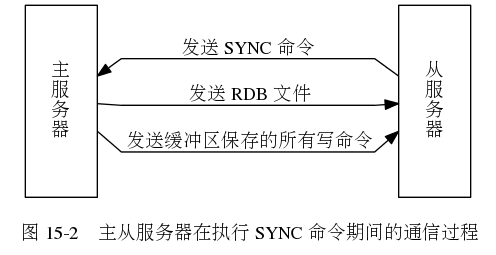
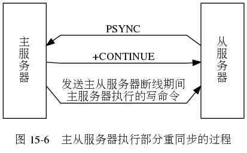
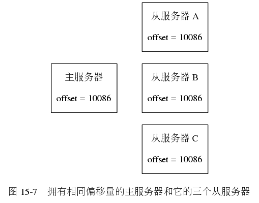
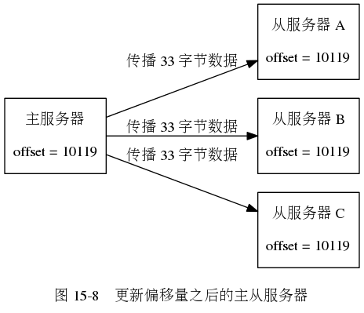
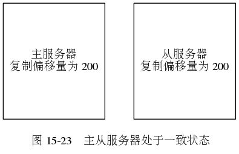
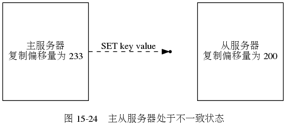
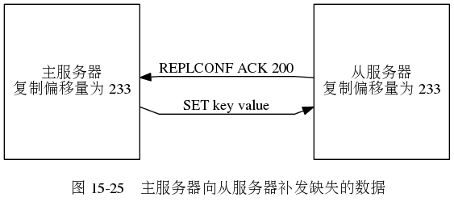

第 15 章： 复制¶
SYNC 命令执行期间，
主从服务器的通信过程。

Redis 的命令传播过程示例。
![digraph {
label = "\n 图 15-3 处于一致状态的主从服务器"
rankdir = LR
node [shape = record, width = 2]
subgraph cluster_master {
label = "主服务器"
master_db [label = " <head> 数据库 | <k1> k1 | <k2> k2 | <k3> k3 | <k4> k4 | <k5> k5 "];
}
subgraph cluster_slave {
label = "从服务器"
slave_db [label = " <head> 数据库 | <k1> k1 | <k2> k2 | <k3> k3 | <k4> k4 | <k5> k5 "];
}
master_db -> slave_db [style = invis]
}](_images/graphviz-6815c2f60e501d13235281426dd7b35eb6cec98b.png)
如果这时，
客户端向主服务器发送命令 DEL k3 ，
那么主服务器在执行完这个 DEL 命令之后，
主从服务器的数据库将出现不一致：
主服务器的数据库已经不再包含键 k3 ，
但这个键却仍然包含在从服务器的数据库里面，
如图 15-4 所示。
![digraph {
label = "\n 图 15-4 处于不一致状态的主从服务器"
rankdir = LR
node [shape = circle]
client [label = "客户端"]
node [shape = record, width = 2]
subgraph cluster_master {
label = "主服务器"
master_db [label = " <head> 数据库 | <k1> k1 | <k2> k2 | <k4> k4 | <k5> k5 "];
}
subgraph cluster_slave {
label = "从服务器"
slave_db [label = " <head> 数据库 | <k1> k1 | <k2> k2 | <k3> k3 | <k4> k4 | <k5> k5 "];
}
master_db -> slave_db [style = invis]
client -> master_db [label = "发送命令 \n DEL k3"]
}](_images/graphviz-c762b83299748735aa6e348e52c1a709d0b15736.png)
在上面的例子中，
主服务器因为执行了命令 DEL k3 而导致主从服务器不一致，
所以主服务器将向从服务器发送相同的命令 DEL k3 ：
当从服务器执行完这个命令之后，
主从服务器将再次回到一致状态 ——
现在主从服务器两者的数据库都不再包含键 k3 了，
如图 15-5 所示。
![digraph {
label = "\n 图 15-5 主服务器向从服务器发送命令"
rankdir = LR
node [shape = record, width = 2]
subgraph cluster_master {
label = "主服务器"
master_db [label = " <head> 数据库 | <k1> k1 | <k2> k2 | <k4> k4 | <k5> k5 "];
}
subgraph cluster_slave {
label = "从服务器"
slave_db [label = " <head> 数据库 | <k1> k1 | <k2> k2 | <k4> k4 | <k5> k5 "];
}
master_db -> slave_db [label = "发送命令 \n DEL k3"]
}](_images/graphviz-87095964cd00b831c44b014be834272de718d1a6.png)
PSYNC 命令执行部分重同步时的过程。

Redis 的复制积压缓冲区的结构图。
![digraph {
rankdir = LR;
node [shape = record];
subgraph cluster_master {
label = "主服务器";
propagater [label = "命令传播程序", height = 3.0];
backlog [label = "复制积压缓冲区"];
propagater -> backlog [label = "将写命令放入队列"];
}
node [height = 1.0];
subgraph cluster_slaves {
slave1 [label = "从服务器 A"];
slave2 [label = "从服务器 B"];
slave3 [label = "从服务器 C"];
style = invis;
}
edge [label = "发送写命令"]
backlog -> slave1 [style = invis];
propagater -> slave1;
propagater -> slave2;
propagater -> slave3;
label = "\n图 15-10 主服务器向复制积压缓冲区和所有从服务器传播写命令数据";
}](_images/graphviz-cda61ff7c43e48f7d440a29dca24e7a4c18c6889.png)
Redis 使用复制积压缓冲区来为断线的从服务器发送缺失数据的过程。


![digraph {
rankdir = LR;
node [shape = box, height = 1.0];
//
master [label = "主服务器\n\noffset = 10119"];
slave1 [label = "从服务器 A\n\noffset = 10086"];
slave2 [label = "从服务器 B\n\noffset = 10119"];
slave3 [label = "从服务器 C\n\noffset = 10119"];
//
edge [label = "传播 33 字节数据"];
master -> slave1 [style = dotted, dir = none, label = "（断线）"];
master -> slave2;
master -> slave3;
label = "\n图 15-9 因为断线而处于不一致状态的从服务器 A";
}](_images/graphviz-006edcd29b6f3ed0c9618ffdb28ebae5c047bd2f.png)
![digraph {
rankdir = LR;
node [shape = box, height = 1.0];
//
master [label = "主服务器\n\noffset = 10119"];
slave1 [label = "从服务器 A\n\noffset = 10119"];
slave2 [label = "从服务器 B\n\noffset = 10119"];
slave3 [label = "从服务器 C\n\noffset = 10119"];
//
master -> slave1 [label = "发送断线时缺失的\n 33 字节数据"];
master -> slave2 [style = invis, dir = none];
master -> slave3 [style = invis, dir = none];
label = "\n图 15-11 主服务器向从服务器发送缺失的数据";
}](_images/graphviz-f6bc4ff370b34ed8a308808cd8ad35cefa719dca.png)
PSYNC 命令判断是执行部分重同步还是完整重同步的流程。
![digraph {
node [shape = box];
data_sync [label = "从服务器接到客户端发来的 SLAVEOF 命令"];
have_cache_or_not [label = "这是从服务器第一次执行复制？", shape = diamond];
data_sync -> have_cache_or_not;
force_full_resync [label = "向主服务器发送\nPSYNC ? -1"];
try_partial_resync [label = "向主服务器发送\nPSYNC <runid> <offset>"];
have_cache_or_not -> force_full_resync [label = "是"];
have_cache_or_not -> try_partial_resync [label = "否"];
full_resync [label = "主服务器返回\n+FULLRESYNC <runid> <offset>\n执行完整重同步"];
force_full_resync -> full_resync;
master_return_continue_or_not [label = "主服务器返回 +CONTINUE ？", shape = diamond];
try_partial_resync -> master_return_continue_or_not;
master_return_continue_or_not -> full_resync [label = "否"];
partial_resync [label = "执行部分重同步"];
master_return_continue_or_not -> partial_resync [label = "是"];
label = "\n图 15-12 PSYNC 执行完整重同步和部分重同步时可能遇上的情况";
}](_images/graphviz-05c9723c0862aecf99485314d7de36c440686539.png)
Redis 服务器监测命令缺失，并补发缺失命令的过程。

如果这时主服务器执行了命令 SET key value （协议格式的长度为 33 字节），
将自己的复制偏移量更新到了 233 ，
并尝试向从服务器传播命令 SET key value ，
但这条命令却因为网络故障而在传播的途中丢失，
那么主从服务器之间的复制偏移量就会出现不一致：
主服务器的复制偏移量会被更新为 233 ，
而从服务器的复制偏移量仍然为 200 ，
如图 15-24 所示。

在这之后，
当从服务器向主服务器发送 REPLCONF ACK 命令的时候，
主服务器会察觉从服务器的复制偏移量依然为 200 ，
而自己的复制偏移量为 233 ，
这说明复制积压缓冲区里面复制偏移量为 201 至 233 的数据（也即是命令 SET key value ）在传播过程中丢失了，
于是主服务器会再次向从服务器传播命令 SET key value ，
从服务器通过接收并执行这个命令可以将自己更新至主服务器当前所处的状态，
如图 15-25 所示。
